수질환경산업기사 (2014-05-25 기출문제)
1과목: 수질오염개론
1. BOD 10mg/L인 하수처리장 유출수가 50,000m3/day로 방출되고 있다. 하수가 방출되기 전에 하천의 BOD는 3mg/L이며, 유량은 5.8m3/sec이다. 방출된 하수가 하천수에 의해 완전 혼합된다고 한다면 혼합지점에서의 BOD 농도(mg/L)는 얼마인가?
- 3.12mg/L
- 3.32mg/L
- 3.64mg/L
- 3.95mg/L
(정답률: 65%)

2. 박테리아의 경험적인 화학적 분자식이 C5H7O2N이면, 100g의 박테리아가 산화될 때 소모되는 이론적산소량(g)은 얼마인가? (단, 박테리아의 질소는 암모니아로 전환된다.)
- 92g
- 101g
- 124g
- 142g
(정답률: 75%)
3. 어느 하천의 DO가 6.3mg/L, BODu가 17.1mg/L이었다. 이때 용존산소곡선(DO Sag Curve)에서 임계점에 달하는 시간(day)은 얼마인가?(단, 온도는 20℃, 용존산소 포화량 9.2mg/L,k1=0.1/day, k2=0.3/day,
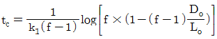
, f=k2/k1)- 약 1.0일
- 약 1.5일
- 약 2.0일
- 약 2.5일
(정답률: 75%)
4. 미생물의 증식곡선의 단계 순서로 알맞은 것은 어느 것인가?
- 대수기 - 유도기 - 정지기 - 사멸기
- 유도기 - 대수기 - 정지기 - 사멸기
- 대수기 - 유도기 - 사멸기 - 정지기
- 유도기 - 대수기 - 사멸기 - 정지기
(정답률: 83%)
5. 다음 우리나라의 수자원 이용현황 중 가장 많은 용도로 사용하고 있는 용수는 어느 것인가?
- 생활용수
- 공업용수
- 하천유지용수
- 농업용수
(정답률: 91%)
6. 0.02M NaOH 100mL를 중화하는데 0.1N H2SO4몇 mL가 소비되는가?
- 5 mL
- 10 mL
- 20 mL
- 100 mL
(정답률: 70%)
7. 글루코스(C6H12O6)를 120mg/L 함유하고 있는 시료용액의 총유기 탄소의 이론치(mg/L)는 얼마인가?(오류 신고가 접수된 문제입니다. 반드시 정답과 해설을 확인하시기 바랍니다.)
- 42 mg/L
- 48 mg/L
- 52 mg/L
- 58 mg/L
(정답률: 72%)
8. 해수의 함유성분 중 “holy seven"에 해당하지 않는 것은 어느 것인가?(오류 신고가 접수된 문제입니다. 반드시 정답과 해설을 확인하시기 바랍니다.)
- HCO-3
- SO2-4
- PO2-4
- K+
(정답률: 59%)
9. 0.04N의 초산이 8% 해리되어 있다면 이 수용액의 pH는 얼마인가?
- 2.5
- 2.7
- 3.1
- 3.3
(정답률: 71%)
10. 어느 폐수의 BODu가 120mg/L이며 k1(상용대수) 값이 0.2/day라면 5일 후 남아 있는 BOD(mg/L)는 얼마인가?
- 10 mg/L
- 12 mg/L
- 14 mg/L
- 16 mg/L
(정답률: 82%)
11. 물 500mL에 NaOH 0.1g을 용해시킨 용액의 pH는 얼마인가?
- 11.0
- 11.3
- 11.4
- 11.7
(정답률: 71%)
12. BOD5가 213 mg/L인 하수의 7일 동안 소모된 BOD(mg/L)는 얼마인가?(단, 탈산소계수는 0.14/day(상용대수 기준))
- 238 mg/L
- 248 mg/L
- 258 mg/L
- 268 mg/L
(정답률: 78%)
13. 어떤 용액의 NaOH 농도가 0.⑤M 이다. 이 농도를 mg/L 단위로 알맞게 나타낸 것은 어느 것인가? (단, Na : 23)
- 500mg/L
- 1,000mg/L
- 2,000mg/L
- 4,000mg/L
(정답률: 78%)
14. Na+ 460mg/L, Ca2+ 200mg/L, Mg2+ 264mg/L인 농업용수가 있다. 이때 SAR(Sodium Adsorption Rate)의 값은 얼마인가? (단, Na : 23, Ca : 40, Mg : 24)
- 4
- 5
- 6
- 7
(정답률: 71%)
15. 물의 밀도가 가장 큰 값을 나타내는 온도는 얼마인가?
- -10℃
- 0℃
- 4℃
- 10℃
(정답률: 86%)
16. 성층현상이 있는 호수에서 수심에 따라 수온차이가 가장 크게 나타나는 층은 어느 것인가?
- epilimnion
- thermocline
- 친전물층
- hypolimnion
(정답률: 86%)
17. pH 2인 용액은 pH 7인 용액보다 몇 배 더 산성인가?
- 100
- 1,000
- 10,000
- 100,000
(정답률: 82%)
18. 수온이 20℃이고 재포기 계수가 0.2/day인 수체에서 수온이 10℃로 변할 때의 재포기 계수(/day)는 얼마인가? (단, 온도보정계수는 1.024)
- 0.158/day
- 0.178/day
- 0.198/day
- 0.218/day
(정답률: 75%)
19. 다음에서 설명하는 기체확산에 관한 법칙은 어느 것인가?
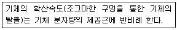
- Dalton의 법칙
- Graham의 법칙
- Gay-Lussac의 법칙
- Charles의 법칙
(정답률: 65%)
20. Ca2+ 이온의 농도가 450mg/L인 물의 환산경도는 얼마인가? (단, Ca : 40)
- 1,125 mg
- 1,250 mg
- 1,350 mg
- 1,450 mg
(정답률: 71%)
2과목: 수질오염방지기술
21. 질산화와 탈질을 일으키는 생물학적 처리에 관한 설명으로 잘못된 것은 어느 것인가? (단, 부유성장 공정 기준)
- 질산화 미생물의 증식량은 종속영양 미생물의 세포 증식량에 비하여 여러 배 적다.
- 부유성장 질산화 공정에서 질산화를 위해서는 최소 2.0mg/L 이상의 DO농도를 유지하여야 한다.
- Nitrosomonas와 Nitrobacter는 질산화를 시키는 미생물로 알려져 있다.
- 질산화를 위해서는 유입수의 비가 클수록 잘 일어난다.
(정답률: 57%)
22. 폭기조 혼합액을 30분간 침전시킨 뒤의 침전물의 부피는 400mL/L이었고, MLSS 농도가 3000mg/L이었다면 침전지에서 침전상태로 알맞은 것은 어느 것인가?
- 정상적이다.
- 슬러지 팽화로 인하여 침전이 되지 않는다.
- 슬러지 부상(Sludge rising)현상이 발생하여 큰 덩어리가 떠오른다.
- 슬러지가 floc을 형성하지 못하고 미세하게 떠다닌다.
(정답률: 73%)
23. Jar test에서 폐수 500mL에 대하여 0.1%의 황산알루미늄 용액 15mL를 첨가하니 처리율이 가장 좋았다. 이때 폐수중의 황산알루미늄 농도(mg/L)는 얼마인가?(단, 0.1% 황산알루미늄 용액의 비중은 1.0 기준이다.)
- 50 mg/L
- 30 mg/L
- 15 mg/L
- 10 mg/L
(정답률: 53%)
24. 유량이 4,000m3/day이고, 포기조의 MLSS가 4,000kg 이다. F/M비(kg/kgㆍday)를 0.20으로 유지하기 위해서는 유입수의 BOD 농도(mg/L)를 얼마로 유입시켜야 되는가?
- 200 mg/L
- 225 mg/L
- 250 mg/L
- 275 mg/L
(정답률: 59%)
25. 유입기질 10g BODu를 혐기성으로 분해시킬 때 발생되는 이론적인 CH4량(L)은 얼마인가? (단, 표준상태 기준)
- 1.5L
- 2.5L
- 3.5L
- 4.5L
(정답률: 50%)
26. 미생물이 분해 불가능한 유기물을 제거하기 위하여 흡착제인 활성탄을 사용하였다. COD가 56mg/L인 원수에 활성탄 20mg/L를 주입시켰더니 COD가 16mg/L으로, 활성탄 52mg/L를 주입시켰더니 COD가 4mg/L로 되었다. COD 9mg/L로 만들기 위해 주입되 어야 할 활성탄 양(mg/L)은 얼마인가?(단, Freundlich 등온공식 :
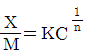
이용)- 31.3 mg/L
- 36.3 mg/L
- 41.3 mg/L
- 46.3 mg/L
(정답률: 58%)
27. 어떤 공장의 폐수량과 BOD 농도가 각각 1,000m3/day, 600mg/L일 때, N과 P는 없다고 가정하면 활성슬러지 처리를 위해서 필요한 (NH4)2SO4의 양(kg/day)은 얼마인가?(단, BOD : N : P = 100 : 5 : 1이라 가정한다.)
- 111 kg/day
- 121 kg/day
- 131 kg/day
- 141 kg/day
(정답률: 50%)
28. 염소소독에 관한 설명으로 잘못된 것은 어느 것인가?(오류 신고가 접수된 문제입니다. 반드시 정답과 해설을 확인하시기 바랍니다.)
- pH 5 또는 그 이하에서 대부분의 염소는 HOCI의 형태이다.
- 은 암모니아와 반응하여 클로라민을 생성한다.
- 은 매우 강한 소독제로 OCI-보다 약 80~200배 정도 더 강하다.
- 트리클로라민(NCI3)은 매우 안정하여 잔류 산화력을 유지한다.
(정답률: 52%)
29. 고도 수처리에 사용되는 분리막에 대한 내용으로 알맞은 것은 어느 것인가?
- 정밀여과의 막형태는 대칭형 다공성막이다.
- 한외여과의 구동력은 농도차이다.
- 역삼투의 분리형태는 공극의 크기(pore size) 및 흡착현상에 기인한 체거름이다.
- 투석의 구동력은 정수압차이다.
(정답률: 75%)
30. 활성슬러지공정 중 최종 침전조에서 슬러지가 부상하는 원인으로 틀린 것은 어느 것인가?
- 탈질소화 현상이 발생할 때
- 침전조의 수면적 부하가 높은 경우
- SVI가 높고 잉여슬러지의 인출량이 부족할 때
- 폭기조의 폭기량을 감소시켜 질산화 정도를 감소시킬 때
(정답률: 54%)
31. 직경이 1.0mm이고 비중이 2.0인 입자를 17℃의 물에 넣었다. 입자가 3m 침강하는데 걸리는 시간(sec)은 얼마인가? (단, 17℃의 물의 점성계수는 1.089×10-3, Stokes 침강이론을 기준으로 한다.)
- 6초
- 16초
- 38초
- 56초
(정답률: 54%)
32. 고형물의 농도가 16.5%인 슬러지 200kg을 건조상에서 건조시켰더니 수분이 20%로 나타났다. 제거된 수분의 양(kg)은 얼마인가? (단, 슬러지의 비중은 1.0 기준이다.)
- 약 127kg
- 약 132kg
- 약 159kg
- 약 166kg
(정답률: 55%)
33. BOD 1kg 제거에 필요한 산소량은 산소 2kg 이다. 공기 1m3에 함유되어 있는 산소량은 0.277kg 이라 하고 포기조에서 공기 용해율을 4%(부피기준)라고 하면, BOD 2.5kg 제거 하는데 필요한 공기량(m3)은 얼마인가?
- 약 451m3
- 약 491m3
- 약 551m3
- 약 591m3
(정답률: 63%)
34. 어떤 폐수를 활성슬러지법으로 처리하기 위하여 예비실험을 행한 결과, BOD를 50% 제거하는데 3시간의 폭기시간이 걸렸다. BOD의 감소속도가 1차 반응속도에 따른다면 BOD를 90%까지 제거하는데 필요한 폭기 시간(hr)은 얼마인가? (단, 자연대수 기준이 다.)
- 약 10 시간
- 약 11 시간
- 약 13 시간
- 약 15 시간
(정답률: 48%)
35. 유입폐수의 유량이 1,000m3/day, 포기조 내의 MLSS 농도가 4,500 mg/L이며 포기시간은 12시간, 최종침전지에서 매일 25m3의 잉여슬러지를 인발한다. 이때 잉여슬러지의 농도는 50,000 mg/L 이며 방류수의 SS를 무시한다면 슬러지 체류시간(SRT)은 얼마인가?
- 1.8 day
- 2.8 day
- 3.8 day
- 4.8 day
(정답률: 56%)
36. 생물학적 하수 고도처리공법인 A/O 공법에 관한 내용으로 잘못된 것은 어느 것인가?
- 사상성 미생물에 의한 벌킹이 억제되는 효과가 있다.
- 표준활성슬러지법의 반응조 전반 20~40% 정도를 혐기반응조로 하는 것이 표준이다.
- 혐기반응조에서 탈질이 주로 이루어진다.
- 처리수의 BOD 및 SS농도를 표준 활성슬러지법과 동등하게 처리할 수 있다.
(정답률: 62%)
37. 슬러지 반송율을 25%, 반송슬러지 농도를 10,000mg/L일 때 포기조의 MLSS 농도(mg/L)는 얼마인가? (단, 유입수의 SS농도는 고려하지 않는다.)
- 1,200 mg/L
- 1,500 mg/L
- 2,000 mg/L
- 2,500 mg/L
(정답률: 55%)
38. 하수처리를 위한 생물막법의 공통적 문제점으로 잘못된 것은 어느 것인가? (단, 활성슬러지법과 비교 기준)
- 활성슬러지법과 비교하면 이차침전지로부터 미세한 SS가 유출되기 쉽다.
- 처리과정에서 질산화 반응이 진행되기 쉽고 이에 따라 처리수의 pH가 낮아지게 되거나 BOD가 높게 유출될 수 있다.
- 생물막법은 운전관리 조작이 간단하지만 운전조작의 유연성에 결점이 있어 문제가 발생할 경우에 운전방법의 변경 등 적절한 대처가 곤란하다.
- 반응조를 다단화 하기 어려워 처리의 안정성이 떨어진다.
(정답률: 59%)
39. 가압부상조 설계에 있어, 유량이 3,000m3/day인 폐수 내 SS의 농도가 200mg/L, 공기의 용해도는 18.7mL/L 이라고 할 때 압력이 4기압인 부상조에서의 A/S 비는 얼마인가?(단, 용존공기의 분율은 0.5이며 반송은 고려하지 않는다.)
- 0.027
- 0.048
- 0.064
- 0.122
(정답률: 57%)
40. 다음 중 물리ㆍ화학적 질소제거 공정으로 틀린 것은 어느 것인가?
- Air Stripping
- Breakpoint chlorination
- Ion exchange
- Sequencing Batch Reactor
(정답률: 68%)
3과목: 수질오염공정시험방법
41. 냄새항목을 측정하기 위한 시료의 최대보존기간 기준으로 알맞은 것은 어느 것인가?
- 즉시
- 6시간
- 24시간
- 48시간
(정답률: 70%)
42. 수로 및 직각 3각 웨어판을 만들어 유량을 산출할 때 웨어의 수두 0.2m, 수로의 밑면에서 절단 하부점까지의 높이 0.75m, 수로의 폭 0.5m일 때의 웨어의 유량(m3/min)은 얼마인가? (단,
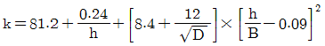
)- 0.54m3/min
- 1.15m3/min
- 1.51m3/min
- 2.33m3/min
(정답률: 67%)
43. 시료의 최대보존기간이 가장 짧은 측정 항목은 어느 것인가?
- 클로로필-a
- 염소이온
- 페놀류
- 암모니아성 질소
(정답률: 65%)
44. 수로의 구성, 재질, 수로단면의 형상, 기울기 등이 일정하지 않은 개수로에서 부표를 사용하여 유속을 측정한 결과 수로의 평균 단면적이 3.2m2, 표면최대유속은 2.4m/sec이라면 이 수로에 흐르는 유량(m3/sec)은 얼마인가?
- 약 2.7m3/sec
- 약 3.6m3/sec
- 약 4.3m3/sec
- 약 5.8m3/sec
(정답률: 61%)
45. 식물성 플랑크톤을 현미경계수법으로 분석하고자 할 때 분석절차에 대한 내용으로 틀린 것은 어느 것인가?
- 시료의 개체수는 계수 면적당 10~40 정도가 되도록 희석 또는 농축한다.
- 시료가 육안으로 녹색이나 갈색으로 보일 경우 정제수로 적절한 농도로 희석한다.
- 시료 농축방법인 원심분리방법은 일정량의 시료를 원심침전관에 넣고 100×g ~ 150×g로 20분 정도 원심분리하여 일정배율로 농축한다.
- 시료농축방법인 자연침전법은 일정시료에 포르말린 용액 또는 루골용액을 가하여 플랑크톤을 고정시켜 실린더 용기에 넣고 일정시간 정치 후 싸이폰을 이용하여 상층액을 따라 내어 일정량으로 농축한다.
(정답률: 68%)
46. 최대유속과 최소유속의 비가 가장 큰 유량계는 어느 것인가?
- 벤튜리미터
- 오리피스
- 피토우관
- 자기식 유량측정기
(정답률: 68%)
47. 감응계수에 대한 설명으로 알맞은 것은 어느 것인가?
- 감응계수는 검정곡선 작성용 표준용액의 농도(C)에 대한 반응값(R)으로 [감응계수=(R/C)]로 구한다.
- 감응계수는 검정곡선 작성용 표준용액의 농도(C)에 대한 반응값(R)으로 [감응계수=(C/R)]로 구한다.
- 감응계수는 검정곡선 작성용 표준용액의 농도(C)에 대한 반응값(R)으로 [감응계수=(CR-1)]로 구한다.
- 감응계수는 검정곡선 작성용 표준용액의 농도(C)에 대한 반응값(R)으로 [감응계수=CR+1)]로 구한다.
(정답률: 64%)
48. 다음은 염소이온 분석을 위한 적정법에 관한 설명이다. ( )안에 알맞은 것은?
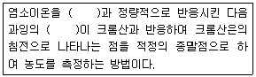
- 질산은
- 황산은
- 염화은
- 과망간산은
(정답률: 68%)
49. 자외선/가시선 분광법(활성탄흡착법)으로 질산성 질소를 측정할 때 정량한계는 얼마인가?
- 0.01mg/L
- 0.03mg/L
- 0.1mg/L
- 0.3mg/L
(정답률: 36%)
50. 투명도 측정에 대한 내용으로 잘못된 것은 어느 것인가?
- 투명도 측정시간은 오전 10시에서 오후 4시 사이에 측정한다.
- 지름 20cm의 백색원판에 지름 5cm의 구멍 8개가 뚫린 투명도판을 사용한다.
- 흐름이 있어 줄이 기울어질 경우에는 2kg 정도의 추를 달아서 줄을 세워야 한다.
- 강우시나 수면에 파도가 격렬할 때는 투명도를 측정하지 않는 것이 좋다.
(정답률: 77%)
51. 다음 중 수소화물생성-원자흡수분광광도법에 의한 비소(As) 측정시 선택파장으로 알맞은 것은 어느 것인가?
- 193.7nm
- 214.4nm
- 370.2nm
- 440.9nm
(정답률: 47%)
52. 다음은 공장폐수 및 하수유량측정방법 중 최대유량이 1m3/min 미만인 경우에 용기사용에 관한 설명이다. ( )안에 알맞은 것은?
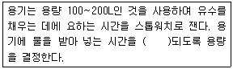
- 20초 이상
- 30초 이상
- 60초 이상
- 90초 이상
(정답률: 50%)
53. 총대장균군 시험방법으로 틀린 것은 어느 것인가?
- 막여과법
- 시험관법
- 평판집락법
- 현미경계수법
(정답률: 74%)
54. 총칙에 대한 내용으로 틀린 것은 어느 것인가?
- 온도의 영향이 있는 실험결과 판정은 표준온도를 기준으로 한다.
- 찬 곳은 따로 규정이 없는 한 0~15℃의 곳을 뜻한다.
- 냉수는 4℃ 이하를 말한다.
- 온수는 60~70℃를 말한다.
(정답률: 66%)
55. 다음은 자외선/가시선 분광법에 의한 페놀류 측정원리를 설명한 것이다. ( )안에 알맞은 것은?
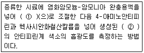
- ① pH 4, ② 청색
- ① pH 4, ② 붉은색
- ① pH 10, ② 청색
- ① pH 10, ② 붉은색
(정답률: 54%)
56. 물벼룩을 이용한 급성독성시험을 할 때 희석수 비율에 해당되는 것은 어느 것인가? (단, 원수 100% 기준이다.)
- 35%
- 25%
- 15%
- 5%
(정답률: 66%)
57. 자외선/가시선 분광법 - 이염화주석환원법으로 인산염인을 분석할 때 흡광도 측정 파장으로 알맞은 것은 어느 것인가?
- 550nm
- 590nm
- 650nm
- 690nm
(정답률: 56%)
58. 불소를 자외선/가시선 분광법으로 분석할 때에 대한 내용으로 알맞은 것은 어느 것인가?
- 정밀도는 첨가한 표준물질의 농도에 대한 측정 평균값의 상대 백분율로서 나타내며 그 값이 25% 이내이어야 한다.
- 알루미늄 및 철의 방해가 크나 증류하면 영향이 없다.
- 정량한계는 0.⑤mg/L 이다.
- 적색의 복합 화합물의 흡광도를 540nm에서 측정한다.
(정답률: 47%)
59. 분석할 시료채취량은 시험항목 및 시험횟수에 따라 차이가 있으나 보통 몇 L 정도를 채취하는가?
- 0.5~1L
- 1~2L
- 2~3L
- 3~5L
(정답률: 80%)
60. 부유물질(SS) 측정시 간섭물질에 관한 내용으로 잘못된 것은 어느 것인가?
- 큰 입자들은 부유물질 측정에 방해를 주며, 이 경우 직경 0.2mm 금속망에 먼저 통과 시킨 후 분석을 실시한다.
- 증발잔류물이 1,000mg/L 이상인 경우의 해수, 공장폐수 등은 특별히 취급하지 않을 경우, 높은 부유물질 값을 나타낼 수 있어 여과지를 여러 번 세척한다.
- 철 또는 칼슘이 높은 시료는 금속 침전이 발생하며 부유물질 측정에 영향을 줄 수 있다.
- 유지(oil) 및 혼합되지 않는 유기물도 여과지에 남아 부유물질 측정값을 높게 할 수 있다.
(정답률: 53%)
4과목: 수질환경관계법규
61. 수질 및 수생태계 환경기준으로 하천에서 사람의 건강보호기준이 다른 수질오염물질은 어느 것인가?
- 납
- 비소
- 카드뮴
- 6가 크롬
(정답률: 73%)
62. 폐수무방류배출시설의 설치허가 또는 변경허가를 받은 사업자가 폐수무방류배출시설에서 배출되는 폐수를 오수 또는 다른 배출시설에서 배출되는 폐수와 혼합하여 처리하거나 처리할 수 있는 시설을 설치하는 행위를 한 경우 벌칙 기준은 어느 것인가?
- 2년 이하의 징역 또는 2천만원 이하의 벌금
- 3년 이하의 징역 또는 3천만원 이하의 벌금
- 5년 이하의 징역 또는 5천만원 이하의 벌금
- 7년 이하의 징역 또는 7천만원 이하의 벌금
(정답률: 52%)
63. 폐수처리업에 종사하는 기술요원의 교육기관은 어느 것인가?
- 국립환경인력개발원
- 환경기술인협회
- 환경보전협회
- 환경기술연구원
(정답률: 70%)
64. 해역 환경기준 중 생활환경기준의 항목으로 틀린 것은 어느 것인가?
- 용매 추출유분
- 수소이온농도
- 총대장균군
- 용존산소량
(정답률: 60%)
65. 복합물류터미널 시설로 화물의 운송, 보관, 하역과 관련된 작업을 하는 시설의 기타 수질오염원 규모기준으로 알맞은 것은 어느 것인가?
- 면적이 10만 제곱미터 이상일 것
- 면적이 20만 제곱미터 이상일 것
- 면적이 30만 제곱미터 이상일 것
- 면적이 50만 제곱미터 이상일 것
(정답률: 63%)
66. 환경부장관이 비점오염저감계획의 이행을 명령할 경우 비점오염저감계획의 이행에 필요한 기간을 고려하여 정하는 기간 범위 기준은 어느 것인가? (단, 시설설치, 개선의 경우 는 제외함)
- 2개월
- 3개월
- 6개월
- 1년
(정답률: 43%)
67. 환경부장관이 10년마다 수립하는 대권역 수질 및 수생태계 보전을 위한 기본계획에 포함되는 사항으로 틀린 것은 어느 것인가?
- 상수원 및 물 이용현황
- 수질오염 예방 및 저감대책
- 수질 및 수생태계 보전조치의 추진방향
- 수질오염저감시설의 분포 현황
(정답률: 50%)
68. 다음 수질오염 방지시설 중 화학적 처리시설은 어느 것인가?
- 살균시설
- 응집시설
- 폭기시설
- 접촉조
(정답률: 72%)
69. 다음은 사업장별 환경기술인의 자격기준에 관한 내용이다. ( )안에 알맞은 것은?
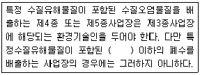
- 1일 10m3
- 1일 30m3
- 1일 50m3
- 1일 100m3
(정답률: 51%)
70. 총량관리 단위유역의 수질 측정방법 기준으로 알맞은 것은 어느 것인가?
- 목표수질지점별로 연간 10회 이상 측정하여야 한다.
- 목표수질지점별로 연간 20회 이상 측정하여야 한다.
- 목표수질지점별 수질측정 주기는 15일 간격으로 일정하여야 한다. 다만, 홍수, 결빙, 갈수 등으로 채수가 불가능한 특정 기간에는 그 측정 주기를 늘리거나 줄일 수 있다.
- 목표수질지점별 수질 측정 주기는 8일 간격으로 일정하여야 한다. 다만 홍수, 결빙, 갈수 등으로 채수가 불가능한 특정 기간에는 그 측정 주기를 늘리거나 줄일 수 있다.
(정답률: 55%)
71. 다음 위임업무 보고사항 중 연간 보고 횟수가 가장 많은 것은 어느 것인가?
- 과징금 징수 실적 및 체납처분 현황
- 골프장 맹ㆍ고독성 농약 사용 여부 확인 결과
- 비점오염원의 설치신고 및 방지시설 설치현황 및 행정처분 현황
- 환경기술인이 자격별ㆍ업종별 현황
(정답률: 70%)
72. 환경부장관이 비점오염원 관리지역을 지정, 고시한 때에 수립하는 비점오염원관리대책에 포함되어야 할 사항으로 틀린 것은 어느 것인가?
- 관리대상 수질오염물질의 발생 예방 및 저감방안
- 관리대상 지역 내 수질오염물질 발생원 현황
- 관리목표
- 관리대상 수질오염물질의 종류 및 발생량
(정답률: 60%)
73. 초과배출부과금 부과 대상 수질오염물질의 종류로 틀린 것은 어느 것인가?
- 구리 및 그 화합물
- 아연 및 그 화합물
- 벤젠류
- 유기인화합물
(정답률: 66%)
74. 1일 폐수배출량이 800m3인 사업장의 규모 구분으로 알맞은 것은 어느 것인가?
- 제 2종 사업장
- 제 3종 사업장
- 제 4종 사업장
- 제 5종 사업장
(정답률: 74%)
75. 오염총량관리 조사ㆍ연구반을 두는 곳은 어디인가?
- 한국환경공단
- 국립환경과학원
- 유역ㆍ지방환경청
- 시도보건환경연구원
(정답률: 73%)
76. 수질오염경보인 조류경보 단계 중 조류 대발생 경보 시 취수장, 정수장 관리자의 조치사항과 가장 거리가 먼 것은?
- 정수의 독소분석 실시
- 정수처리 강화(활성탄 처리, 오존 처리)
- 조류증식 수심 이하로 취수구 이동
- 취수구 등에 대한 조류 방어막 설치
(정답률: 64%)
77. 다음은 비점오염 저감시설 중 “침투시설”의 설치기준에 관한 사항이다. ( )안에 알맞은 것은?
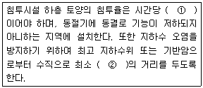
- ① 5밀리미터 이상, ② 0.5미터 이상
- ① 5밀리미터 이상, ② 1.2미터 이상
- ① 13밀리미터 이상, ② 0.5미터 이상
- ① 13밀리미터 이상, ② 1.2미터 이상
(정답률: 71%)
78. 1일 폐수배출량이 2,000m3이상인 폐수배출시설의 지역별, 항목별 배출허용기준으로 잘못된 것은 어느 것인가?
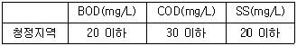
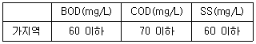
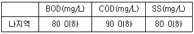
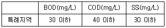
(정답률: 61%)
79. 환경부장관이 폐수배출시설, 비점오염저감시설 및 폐수종말처리시설을 대상으로 조사하는 기후변화에 대한 시설의 취약성 조사주기는 얼마인가?
- 3년
- 5년
- 7년
- 10년
(정답률: 65%)
80. 사업자는 배출시설과 방지시설의 정상적인 영업ㆍ관리를 위하여 대통령령으로 정하는바에 따라 환경기술인을 임명하여야 한다. 이를 위반하여 환경기술인을 임명하지 아니한 자에 대한 과태료 부과 기준은 어느 것인가?
- 100만원 이하
- 200만원 이하
- 300만원 이하
- 1000만원 이하
(정답률: 63%)
BOD 양 = BOD 농도 x 유출수 양
= 10mg/L x 50,000m3/day
= 500,000mg/day
하수가 방출되기 전 하천의 BOD 양은 다음과 같다.
하천의 BOD 양 = BOD 농도 x 유량 x 86,400초 (하루의 초 단위)
= 3mg/L x 5.8m3/sec x 86,400초
= 14,899,200mg/day
따라서, 혼합지점에서의 총 BOD 양은 다음과 같다.
총 BOD 양 = 하수처리장 유출수의 BOD 양 + 하천의 BOD 양
= 500,000mg/day + 14,899,200mg/day
= 15,399,200mg/day
혼합지점에서의 BOD 농도는 다음과 같다.
BOD 농도 = 총 BOD 양 / 혼합수 양
= 15,399,200mg/day / (50,000m3/day x 86,400초)
= 3.64mg/L
따라서, 정답은 "3.64mg/L"이다.